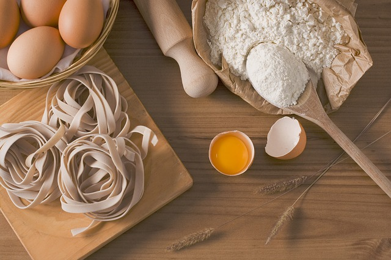

Farklı Tatları Deneyimlemek İsteyenlere Dünya Mutfağı
Pizza
Evde pizza yapmadıysanız hemen denemelisiniz. Çünkü bu tarifle evde yapacağınız pizza, dışarıdakilere rakip olacak derecede iyi! Peynirli, karışık, sebzeli... Saymakla bitmeyen pizza çeşidinin içinden bugün sizler için şarküteri pizza tarifini seçtik. Bazen canımızın hangisini istediğini anlayamayız, sanki hepsini yesek anca doyacakmışız gibi gelir. İşte tam böyle zamanlar için tarifimizi huzurlarınıza sunuyoruz.Evde mayalayacağınız hamuru istediğiniz gibi bol bol koyacağınız malzemelerle birleştirin ve gönülleri fethedecek şarküteri pizza tarifiyle doymaya hazırlanın.

Fettucini Alfredo
Tavuk, mantar ve krema lezzetini kendinde toplayan fettucini alfredo, sıcak sıcak servis edildiğinde sarımsak ve fesleğen kokusu ile diyet bozdurur. Yapımı için de çok fazla uğraşmaya gerek yok! Sadece 25 dakika yeter de artar bile. Tam bir keyif yemeği olan bu tarif, makarnaya boyut atlatıyor, doyuruculuğu ve lezzetiyle de tüm gönüllleri fethediyor.Hadi o zaman malzemeler bir bir tezgaha çıksın! Mutfaktan nefi mi nefis kokular yükselsin. Karşınızda tabakların en şık misafiri: Fettucini alfredo!
Sashimi
Japonya'da doğmuş olmadığınız ya da suşi yaparak para kazanmadığınız sürece bütün suşi çeşitlerine ve türlerine hakim olmanız beklenmez, beklenmemeli. Bütün suşi çeşitlerini bilmemek cahillik değil, suşi konusu derya deniz çünkü.Saşimi diye okunan sashimi'de, pirinç yer almaz. Sadece çiğ balık yer alır. Yani pirinçsiz sushi de diyebiliriz. İnce dilimler halinde servis edilir.